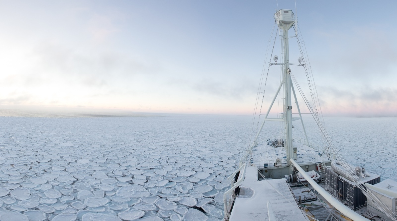
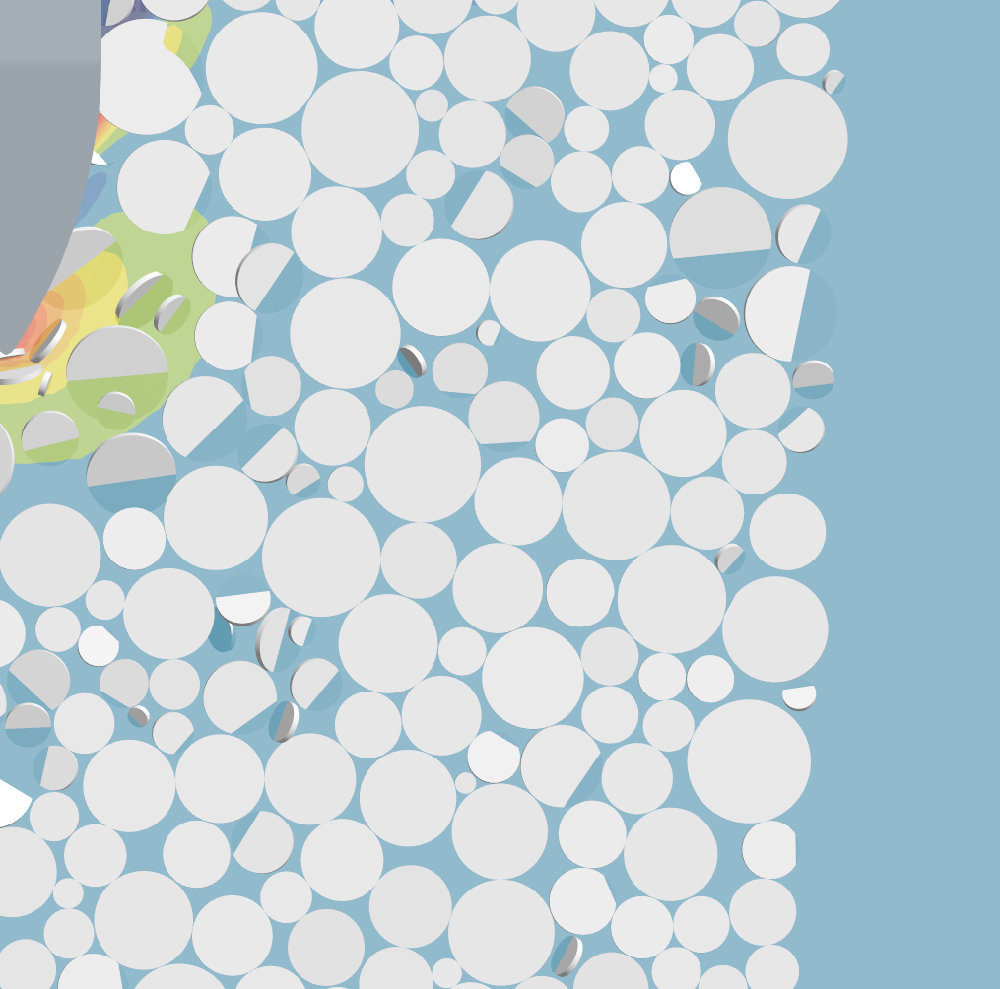
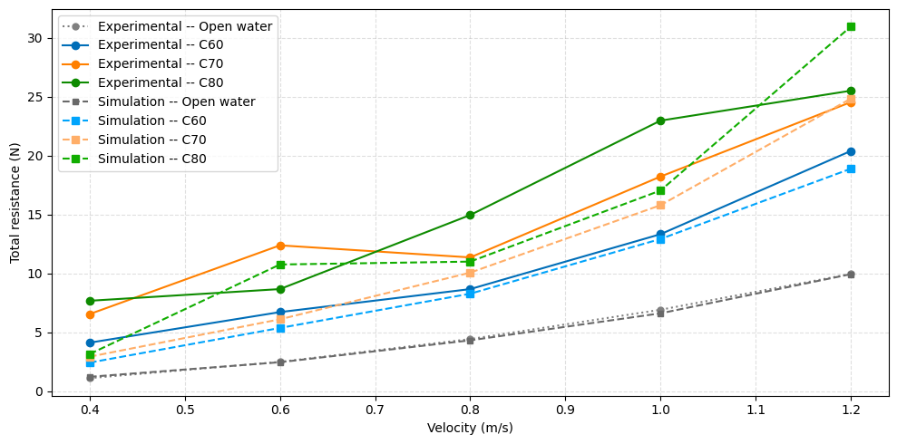

01
Master thesis · OSK Design
Added resistance in ice floes
A CFD–DEM study of a ship navigating through fragmented ice, developed with OSK Design and validated against KCS towing-tank data.
Read the master thesis ↗


